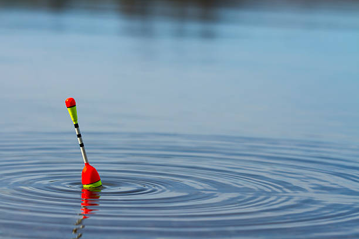
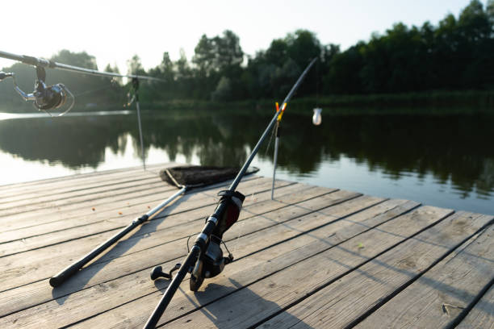
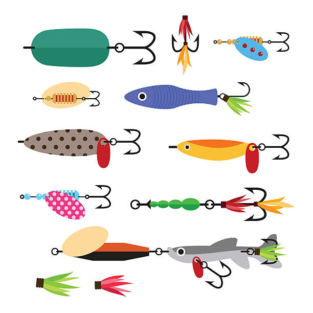
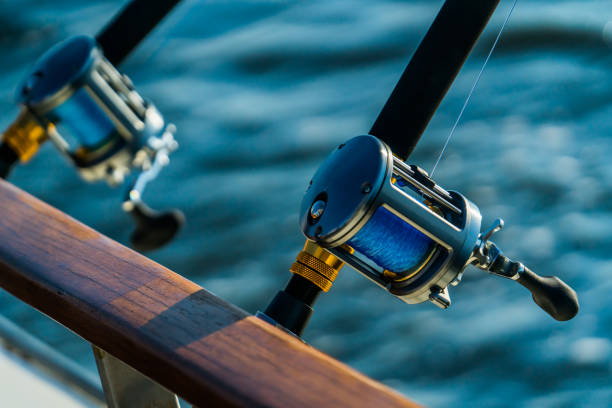

Metody wędkowania
Metoda spławikowa
Metoda spławikowa to jedna z najprostszych i najpopularniejsyzch metod wędkarskich. Bardzo często poleca się ją nowym wędkarzom. Metoda ta polega na ułożeniu zestawu składającego się z haczyka z przynętą, obciążenia oraz spławika wykorzystywanego jako wskaźnik brania ryby. Samo łowienie tą metodą polega na zarzuceniu zestawu do wody i wyczekiwaniu aż spławik się zanurzy, oznacza to że ryba złapała za przynętę. Ta metoda jest skuteczna w wielu sytuacjach i pozwala na łowienie ryb zarówno na głębokiej, jak i płytkiej wodzie.

Metoda feederowa

Metoda feederowa skupia się na połowie ryb roślinożernych i rozdziela się na parę rodzajów. Metoda ta jest podobna do metody spławikowej natomiast różni się tym, że zestaw leży na dnie zbiornika a zamiast spławika występuje obciążenie lub koszyczek z zanętą. Ta metoda pozwala na precyzyjne kontrolowanie ilości i rodzaju pokarmu, co przyciąga ryby i umożliwia ich łowienie.
Metoda spinningowa
Spinning to metoda skupiająca się na połowie ryb drapieżnych. Polega na prowadzeniu sztucznej przynęty poprzez zarzucanie i zwijanie, tak by imitowała rybkę lub inne stworzenie. W spinningu używa się bardzo różnych przynęt takich jak gumy Branie możemy wyczuć poprzez pociągnięcie przynęty przez rybę co można też często zauważyć na szczytówce wędki.

Metoda castingowa

Metoda ta podobna jest do metody spinningowej, różni się w sumie tylko sprzętem. Metoda castingowa wymaga nieco wprawy, ale po jej opanowaniu może być bardzo skuteczna.